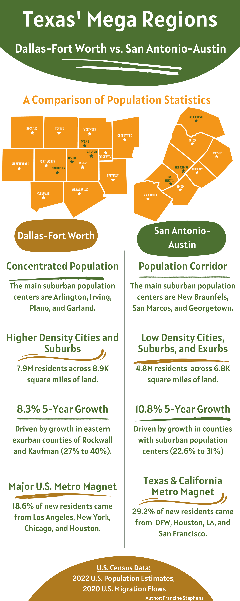

Population Growth & Density

Download Full Infographic (PDF)This infographic compares population density, suburban growth patterns, and five-year expansion rates across the Dallas–Fort Worth and San Antonio–Austin megaregions. It highlights the concentrated suburban hubs in DFW (Arlington, Irving, Plano, Garland) and the emerging corridor cities in Central Texas (New Braunfels, San Marcos, Georgetown).
Migration Flows Into Texas

This map visualizes where new residents are moving from, using U.S. Census migration flow data. Blue lines represent migration into the Dallas–Fort Worth metroplex, while orange lines represent migration into the San Antonio–Austin corridor. Line thickness corresponds to the share of new residents from each origin metro area.
The tables summarize the top origin metros for each region, revealing strong inflows from California, the Northeast, and other major Texas metros. These patterns illustrate how both megaregions function as national migration magnets with distinct geographic profiles.